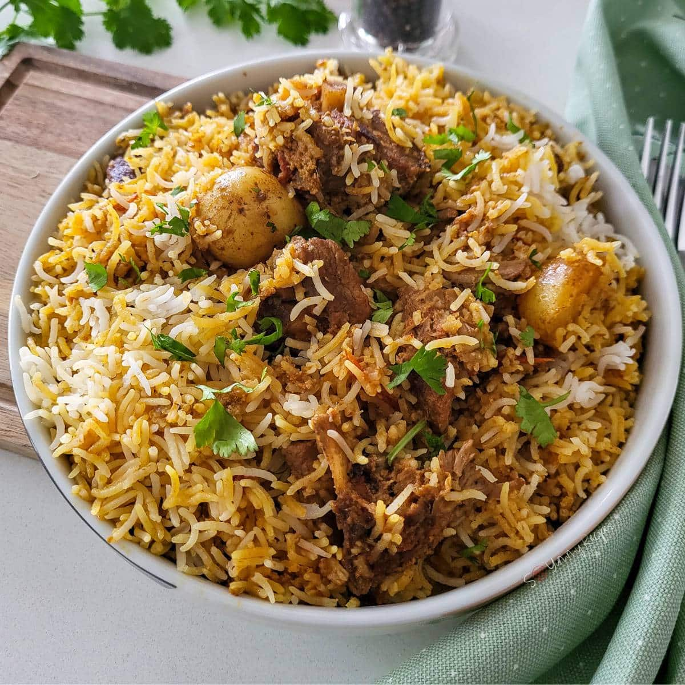
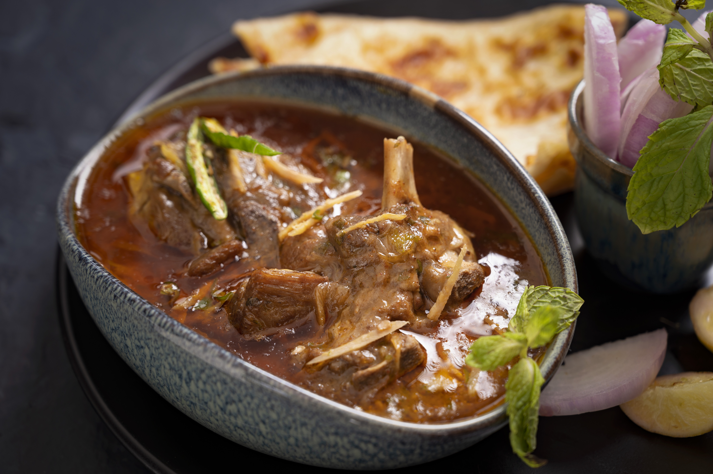
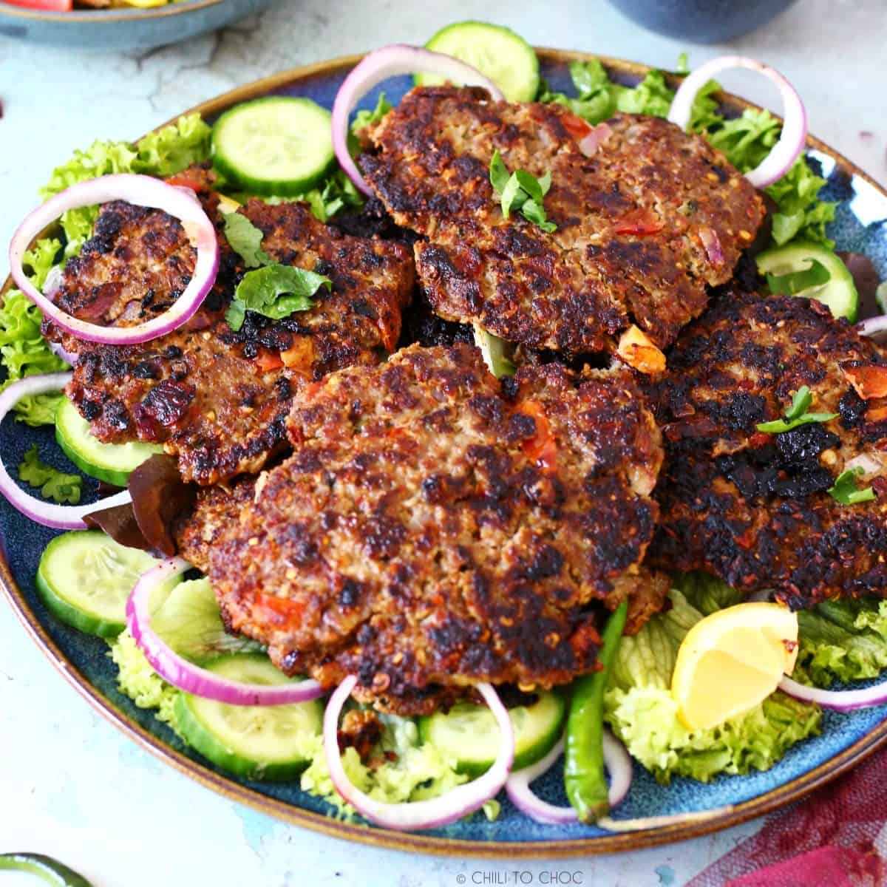
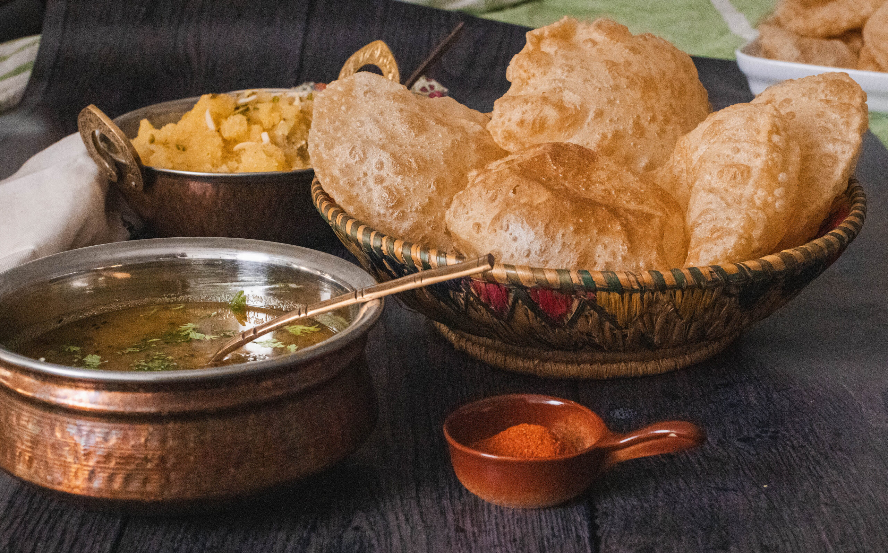
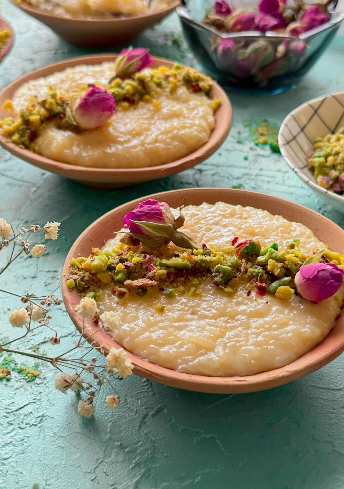
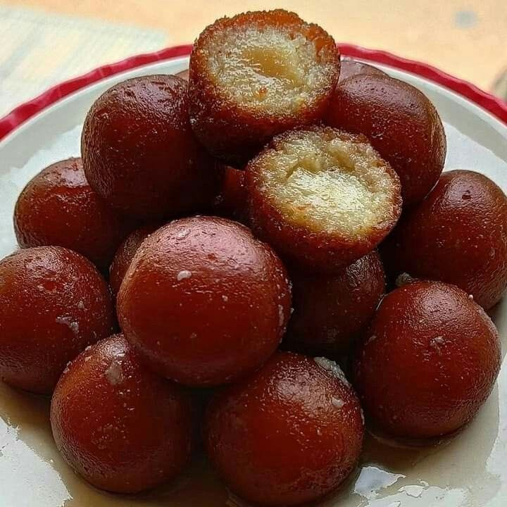
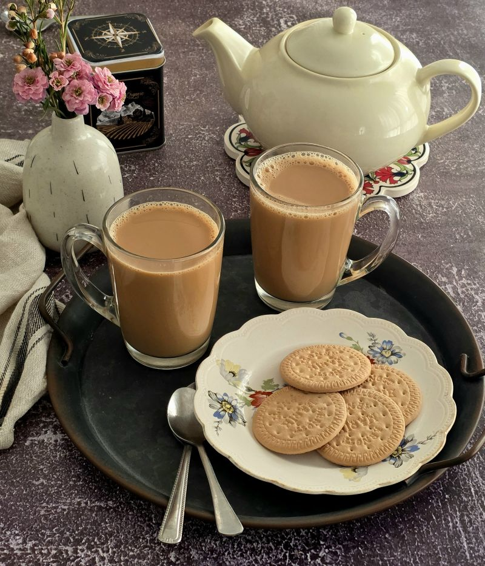

A Feast for the Senses
Pakistani cuisine draws from Central Asian, Persian, Mughal, and South Asian culinary traditions, resulting in dishes of remarkable depth and flavour.
Biryani
Perhaps Pakistan's most iconic dish, Biryani is a fragrant rice dish layered with marinated meat, fried onions, saffron, and a blend of whole and ground spices. Each region has its own distinct version — the Sindhi Biryani is spicier, while the Lahori style is richer with yogurt and cream.
Biryani is served at weddings, festivals, and everyday meals, making it the true heart of Pakistani cooking.

Karahi
Named after the wok-like pan it is cooked in, Karahi is a staple dish of chicken or mutton slow-cooked with tomatoes, ginger, garlic, and green chillies. It is typically finished with a handful of fresh coriander and a squeeze of lemon.
Roadside dhabas (food stalls) across Pakistan serve some of the finest Karahi, cooked over open wood fires for unmatched smoky flavour.

More Beloved Dishes

Nihari
A slow-cooked stew of beef shank, spiced with fenugreek and ginger, traditionally served as a hearty breakfast in Lahore and Karachi.

Chapli Kebab
A Pashtun speciality from Khyber Pakhtunkhwa — a flat, spiced minced-meat patty fried in tallow, packed with bold flavours.

Halwa Puri
The quintessential Pakistani breakfast — deep-fried puri bread served with spiced potato curry, chickpeas, and semolina halwa.

Kheer
A creamy rice pudding sweetened with sugar and cardamom, garnished with pistachios and rose water — the most beloved Pakistani dessert.

Gulab Jamun
Soft milk-solid dumplings soaked in rose-flavoured sugar syrup, served warm at celebrations and festivals.

Chai (Tea)
The national drink — milky, sweet, and spiced with cardamom. Sharing chai is central to Pakistani social life.